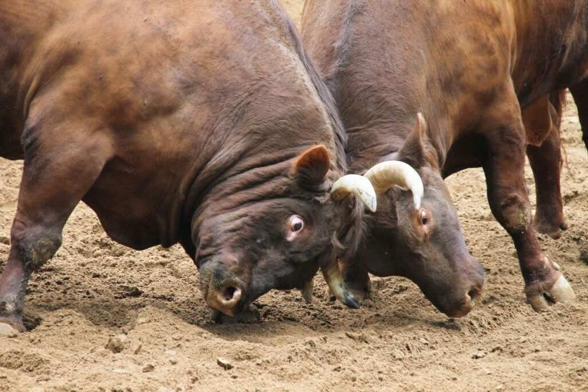
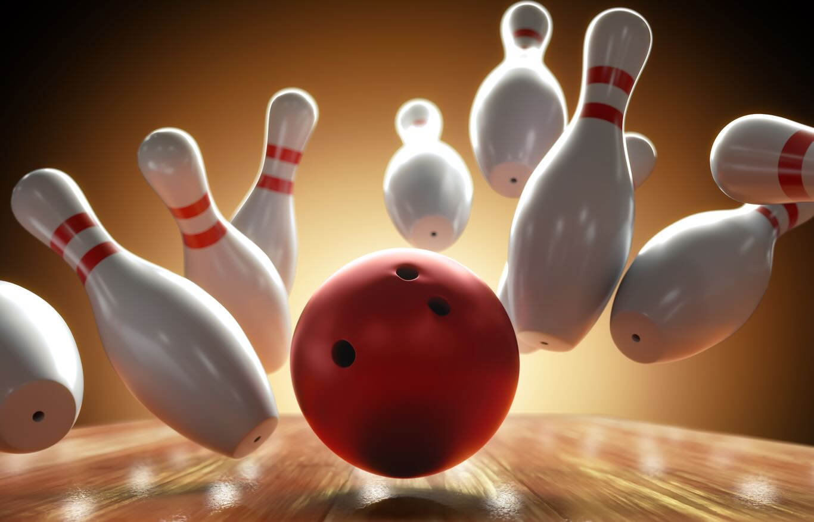
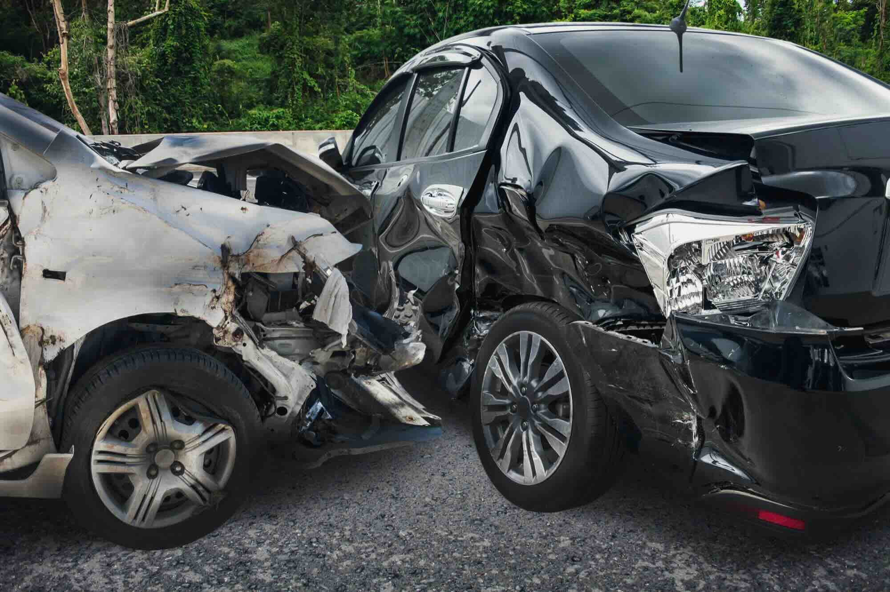
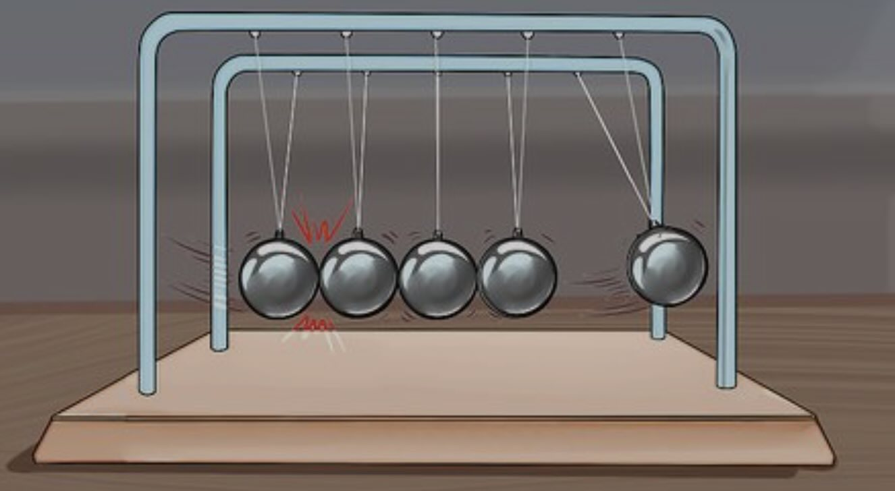
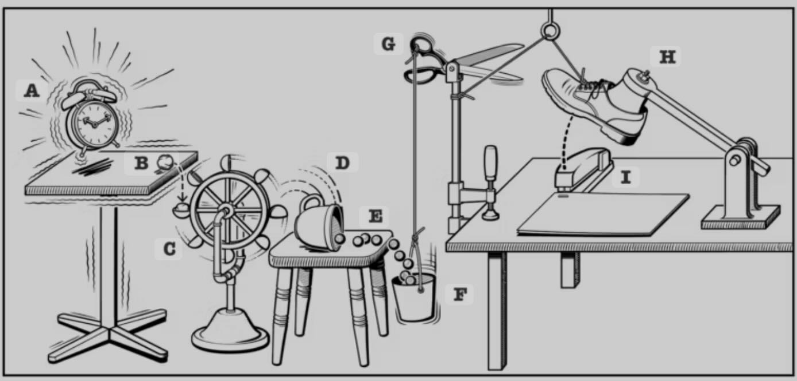
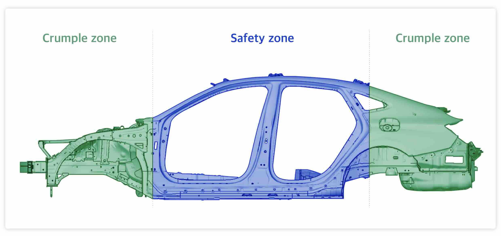

Energy and Collisions: How Things Go Bump!
What Is a Collision?
A collision happens when one object runs into another. We see collisions happening all around us every day! Some collisions are gentle (like a puppy licking your face) while others are dramatic (like a wrecking ball smashing into a building).
Key Concept: During a collision, energy transfers from one object to another.
What Is Energy?
Energy is the ability to do work. In simpler terms: energy makes things happen! Without energy, nothing would move, grow, or change.
Vocabulary: Energy - The ability to do work; it makes things happen!
Energy All Around Us: Energy isn't just something humans use. Water has energy to turn water wheels, wind has energy to spin turbines, and animals use energy when running or fighting over territory.

When animals fight over territory, the larger animal typically transfers more energy during collisions because of its greater mass.
Energy Transfer in Collisions
When objects collide, energy transfers from one object to the other. This is why things move or change after they bump into each other!
At the moment of impact, energy transfers from the swinging bat to the baseball, sending it flying through the air.
Think about this: When a baseball bat hits a ball, the energy from the moving bat transfers to the ball, making it fly through the air.
The amount of energy transferred during a collision depends on two main factors:
- Speed - Faster objects transfer more energy
- Weight - Heavier objects transfer more energy
Speed and Energy Transfer
The faster an object is moving, the more energy it can transfer during a collision. This is why a fast-moving bowling ball knocks down more pins than a slow-rolling one.

A fast-moving bowling ball transfers more energy to the pins, causing them to scatter more dramatically than a slow-moving ball would.
Real-World Example: This is why car accidents at high speeds are more serious than fender-benders at low speeds. When cars are traveling fast and crash, they transfer much more energy, causing more damage. This is also why we have speed limits on roads!

Car accidents demonstrate energy transfer during collisions. The damage is more severe at higher speeds due to greater energy transfer.
Think About: How would the result be different if you rolled a bowling ball very slowly toward the pins versus throwing it at full speed?
Weight and Energy Transfer
Heavier objects carry more energy when they move. When they collide with lighter objects, they transfer more energy.
Real-World Example: In football, a 300-pound lineman tackling a 100-pound quarterback has a huge advantage because of the energy transfer. Similarly, in animal territories, larger animals usually win fights because they can transfer more energy during collisions.
Fun Fact: This is why accidents between trucks and cars are so dangerous - the heavy truck transfers an enormous amount of energy to the lighter car during the collision.
Examples of Collisions in Everyday Life
Sports
Sports are full of collisions! Here are some examples:
- A baseball bat hitting a ball
- Tennis rackets hitting tennis balls
- Football players tackling each other
- Basketball players bumping into each other
- Bowling balls hitting pins
Next time you watch a sport, try to notice all the different collisions happening and how energy transfers from one object or person to another.
Music
Making music often involves collisions:
- Drumsticks hitting drums
- Mallets hitting xylophones
- Hammers hitting piano strings
When a drumstick hits a drum, the energy of motion from the swinging drumstick transfers to the drum's surface, causing it to vibrate and produce sound. If you hit the drum harder (with more energy), it makes a louder sound!
Transportation
Collisions in transportation:
- Bumper cars at amusement parks
- Car accidents (which we try to avoid!)
- Trains coupling together
Special Types of Collision Examples
Newton's Cradle
Newton's cradle is a special toy with a series of swinging metal balls. When you lift and release the ball on one end, it collides with the next ball, transferring energy through the row until the ball on the opposite end swings out.

Newton's cradle demonstrates energy transfer through a series of collisions. The energy travels from the first ball through the middle balls to the last ball.
Energy Loss: Over time, the balls in Newton's cradle slow down and eventually stop swinging. This happens because some energy gets converted to heat and sound during each collision. Energy is never destroyed, but it can change forms!
Rube Goldberg Machines
A Rube Goldberg machine is a complex contraption that performs a simple task through a series of energy transfers and collisions. For example, a marble rolls down a ramp, hits a domino, which falls and triggers another movement, and so on.

A Rube Goldberg machine uses a series of collisions and energy transfers to complete a simple task in a complicated way.
Vocabulary: Rube Goldberg Machine - A complex contraption that performs a simple task through a chain reaction of events.
Car Safety Features
Engineers design cars with crumple zones - special areas that collapse during a collision to absorb energy. By absorbing energy in the crumple zone, less energy transfers to the passengers, keeping them safer.

Crumple zones in cars are designed to absorb the energy of a collision, protecting the passengers inside by reducing the energy transferred to them.
Without crumple zones, all the energy from a collision would transfer directly to the passengers, causing more injuries. Crumple zones sacrifice the car's structure to protect the people inside.
What Happens After a Collision?
Changes in Motion
After objects collide, they often change direction or speed:
- They might stop moving (if they transfer all their energy)
- They might move in a different direction
- They might spin or rotate
- They might break apart
Think about bumper cars - when one car hits another, both cars change direction based on where and how hard they hit.
Energy Transformation
During collisions, energy doesn't just transfer between objects - it can also change forms:
- Motion energy can become sound energy (like the "clack" of billiard balls)
- Motion energy can become heat energy (rub your hands together fast to feel this)
- Motion energy can become light energy (like sparks when metals collide)
Important Concept: Energy is never created or destroyed during a collision - it just changes form or transfers to different objects.
Elastic vs. Inelastic Collisions
Scientists classify collisions into two main types:
Elastic Collisions
In an elastic collision, objects bounce off each other with very little energy lost to heat or sound. A bouncy rubber ball hitting a hard floor is almost elastic.
Inelastic Collisions
In an inelastic collision, objects don't bounce away from each other as much. They might stick together or lose a lot of energy as heat or sound. Clay balls colliding or cars crashing are inelastic collisions.
Think About: Drop a rubber ball on the floor, then drop a ball of clay. Why does the rubber ball bounce back up, but the clay doesn't?
Key Vocabulary Review
- Energy: The ability to do work; it makes things happen!
- Collision: When one object runs into another
- Energy Transfer: When energy moves from one object to another
- Contact: When two objects touch each other
- Stationary Object: An object that is not moving
- Rube Goldberg Machine: A complex contraption that performs a simple task
Final Thoughts: Collisions in Nature
Collisions aren't just something humans experience. They happen all throughout nature:
- Animals collide when fighting over territory
- Meteors collide with planets
- Water molecules collide, creating waves and currents
- Tectonic plates collide, creating mountains and earthquakes
Cosmic Collision: Scientists believe that our Moon was formed when a Mars-sized object collided with Earth billions of years ago. That's a really big collision!
Thinking Questions
- How would the energy transfer be different if a ping pong ball and a bowling ball both hit a stationary object at the same speed?
- When a baseball bat hits a ball, what happens to all the energy? Does it all go into the ball's motion?
- Why does a heavy truck do more damage in a collision than a small car going the same speed?
- How do crumple zones in cars help protect passengers during a collision?
- Why do the balls in Newton's cradle eventually stop moving?
- How would hitting a drum hard versus softly affect the sound produced?
- What happens to the energy when two bumper cars collide and then move away from each other?
- How might the collision change if two objects hit head-on versus at an angle?
- Why do heavier animals usually win in territorial fights?
- How does the speed of a bowling ball affect how many pins get knocked down?